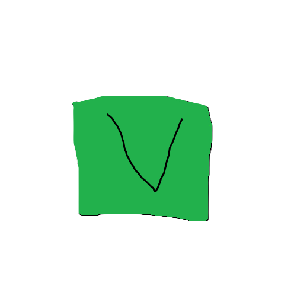

EBlan browsersersf
еБЛАН бровсер эт окрутая утилита
Spyware Level: yeaHHH BABY ITS NOT A SPYWARE
Еблан Браузер ценит приватность юзеров, поэтому они отключили все домены кроме .ru, .su, .рф, и прочих некрасивых российских доменов хз[1] Это ни в какой вселенной не может быть спайваром, честно
К тому же, Еблан Браузер не использует движок Chromium, а использует движок Python, который, как известно, не содержит спайварных функций. Это делает Еблан Браузер одним из самых безопасных браузеров на рынке.
Еблан Браузер также не собирает никакую информацию о своих пользователях, что делает его идеальным выбором для тех, кто ценит свою приватность. Он не использует кукисы, не отслеживает историю просмотров и не собирает никакую другую информацию о своих пользователях.
В целом, Еблан Браузер - это отличный выбор для тех, кто ищет безопасный и приватный браузер. Он не содержит спайварных функций, не собирает информацию о своих пользователях и обеспечивает отличный опыт просмотра веб-страниц.
тхис артикле вас последни раз редактировался 14.8.8